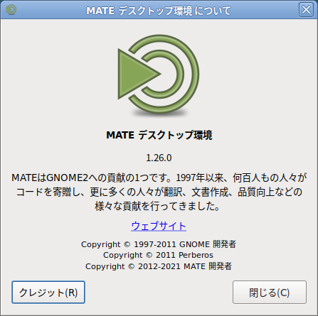

MATE 1.26 を公開しました
今回のリリースには通常よりも少し時間がかかったかもしれませんが、18ヶ月の開発期間を経て、MATE 1.26 がリリースできたことをうれしく思います。このリリース実現するために協力していただいたすべての貢献者のみなさんに感謝します。

MATE 1.26 で新しくなったこと
今回のリリースの課題は、MATE デスクトップに新しい機能を追加すると同時に、私たち全員が知っていて愛している、ルック＆フィールを維持することでした。追加されたすべての機能は確かに非常にエキサイティングですが、私たちは多数のバグ修正、コードベースの最新化、パフォーマンスの最適化を行うことを忘れませんでした。
MATE デスクトップ 1.26 の主な変更点は次のとおりです。
- 私たちは、Waylandでは Atril、システムモニタ、Pluma、端末、その他デスクトップのコンポーネントをサポートしています。さらに、電卓と端末は Meson でビルドできるようになりました。
-
Pluma は大幅に改善されました。
- コンテンツの概要を即時に確認できる新しいミニマップがあります。
- 新しいグリッド背景パターンによって、Pluma が手書きパッドへと変わります。
- 検索プラグインは「元に戻す操作」をサポートするようになりました。
- 行番号の表示/非表示のショートカット Ctrl + Y を追加しました。
- 設定ダイアログは、すべての新機能に追いつくために再設計が必要でした。
- 新しいPluma プラグインと共に、テキストエディタは ブラケット補完、Comment/Uncommentコード、ビルトイン端末、および単語補完をサポートする機能豊富な IDE にすることができます。
- コントロールセンタでは、ウィンドウの設定ダイアログが改善され、オプションが追加されています。表示ダイアログに表示スケーリングのオプションが追加されました。
- 通知はハイパーリンクに対応するようになったので、一層便利になりました。そしてついに、「Do not Disturb」アプレットが追加されました。
- アプレットについていえば、ウィンドウリストのアプレットにはマウススクロールを無効にする新しいオプションがあります。オプションのウィンドウサムネイルは cairo サーフェスとしてレンダリングされるので、鮮明でクリアになりました。
- ネットスピード・アプレットはデフォルトで詳細情報を表示し、netlink をサポートします。
-
電卓は GNU MPFR/MPC ライブラリに移植されました。これはより正確でより高速な計算と関数の追加 (例えばリーマンゼータ関数、ガウス誤差関数) を意味します。
- 私たちはついに最近の計算を示す履歴を追加しました。
- 履歴がアクティブな時、電卓のサイズを変更できるようになりました。
- 整数の因数分解速度が大幅に向上しました。
- モジュール式演算評価が大幅に高速化（モジュール式指数機能）。
- ファイルマネージャ Caja では、新しいブックマークサイドバーを選択できます。Caja は、コンテキストメニューでドライブの初期化をサポートします。コンテキストメニューから起動して任意のプログラムが追加可能な、Caja Actions 拡張機能がデスクトップの一部になりました。
- Atril では、遅いリニア検索がバイナリツリー検索に置き換えられたので、サイズの大きな文書をスクロールする速度が大幅に向上しました。必要な場合にのみ EvWebView が作成されるようになったので、文書ビューアのメモリフットプリントはさらに小さくなりました。
- ウィンドウマネージャ Marco は、最小化されたウィンドウを元の位置へより確実に復元するようになりました。
- Engrampa は電子書籍 (EPUB) と ARC アーカイブをサポートするようになりました。さらに、暗号化された RAR アーカイブを開くことができるようになりました。
- 電源管理にはキーボードの調光を有効にする新しいオプションがあります。これは libsecret へ移植されています。
- 多くの About という概要ダイアログは、より適切な記述へと更新されました。なぜなら、小さな事も重要
:-)です。 - 私たちは多数の不具合や一部のメモリリークを修正し、ほぼ全部のデスクトップコンポーネントのコードベースを最新にしました。
- 新しい Wiki が出来たので、新規の貢献者がプロジェクトに非常に参加しやすくなりました。やる気のある方が至急必要なので、連絡を取ることや貢献を開始することを遠慮せずにお願いします。
- 翻訳が更新されました。翻訳チームのみなさんに感謝します！
MATE デスクトップ 1.26 の各種コンポーネントは、次の場所からダウンロードできます。
詳細情報
詳細は以下のとおりです。
Atril 文書ビューア
- ヘルプは完全に書き直されました (TeX ファイルを大量に作成する場合は、必ず新しい synctex のセクションを参照してください)
- ev-window.c: EvWebView は必要な場合のみ作成されます
- ev-sidebar-links: ページの逆リンク検索を最適化 (サイドバーのリンクの非常に低速な線形検索が、特別なバイナリツリー内の検索に置き換えられました)
- Wayland のサポートを追加
- 添付ウィンドウがサイドバー全体に表示されるようにしました
- synctex のオプション化
- 空の navMap のセグメンテーション・エラーを修正
- Clang Static Analyzer、Cppcheck、および GCC によって報告されたコード解析や非推奨警告を修正
- build: ネイティブ言語サポート (NLS) を無効にするオプション (
--disable-nls) を追加 - g10n: 翻訳の更新
完全な変更点は次のとおりです: https://github.com/mate-desktop/atril/commits/master/
Caja ファイルマネージャ
- 作成時刻の情報をリストの列に追加できるようになりました。
- デスクトップ上でアイコンのロック位置をブロックする設定を追加
- ドラッグ＆ドロップ時のファイルシステムのチェック機能向上
- Caja を使ってドライブの初期化が可能になりました。
- fm-properties-window: システムフォルダの場所をポータブルに
- 再ロードボタンを中クリックするとタブを複製します
- デフォルトでウェブブラウザからのリンクを作成
- Caja のサイドバーへ「ブックマーク」を追加
- 明示的な
--selectコマンドラインオプションをサポート - 元に戻す操作で削除する前に確認
- Clang Static Analyzer、Cppcheck、および GCC によって報告されたコード解析や非推奨警告を修正
- 複数のメモリリークを修正
- build: ネイティブ言語サポート (NLS) を無効にするオプション (
--disable-nls) を追加 - g10n: 翻訳の更新
完全な変更点は次の changelog にあります: https://github.com/mate-desktop/caja/commits/master/
caja-actions
- 今回のリリースで初登場です。
- i18n: intltools から gettext へ移行
- Clang Static Analyzer、Cppcheck、および GCC によって報告されたコード解析や非推奨警告を修正
- g10n: 翻訳の更新
caja-dropbox
- i18n のサポートを追加
- g10n: 翻訳の更新
完全な変更点は次の changelog にあります: https://github.com/mate-desktop/caja-dropbox/commits/master/
caja-extensions
- gksu: 新しいスレッドでコマンドを実行しません
- glade ファイルで gtk+ 3.22 が必要
- sendto: E メール送信用の evolution コマンドを修正
- image-converter: caja-image-rotate.ui をすべて書き直し
- 複数のメモリリークを修正
- build: ネイティブ言語サポート (NLS) を無効にするオプション (
--disable-nls) を追加 - g10n: 翻訳の更新
完全な変更点は次の changelog にあります: https://github.com/mate-desktop/caja-extensions/commits/master/
Engrampa 書庫マネージャ
- rar 6.00: アーカイブファイルの内容リストを暗号化ファイルリストに修正
- 電子書籍 (EPUB) のサポートを追加
- ARC アーカイブのサポートを追加
- Clang Static Analyzer、Cppcheck、および GCC によって報告されたコード解析や非推奨警告を修正
- 複数のメモリリークを修正
- build: ネイティブ言語サポート (NLS) を無効にするオプション (
--disable-nls) を追加 - g10n: 翻訳の更新
完全な変更点は次にあります：https://github.com/mate-desktop/engrampa/commits/master/
eom 画像ビューア
- ui ファイルのアップグレード
- 画像を移動するためにドラッグした時スクロールバーが確実に移動するようにしました
- ダイアログウィンドウでのタブスクロールのサポートを追加
- Clang Static Analyzer、Cppcheck、および GCC によって報告されたコード解析や非推奨警告を修正
- build: ネイティブ言語サポート (NLS) を無効にするオプション (
--disable-nls) を追加 - g10n: 翻訳の更新
完全な変更点は、https://github.com/mate-desktop/eom/commits/master/ に掲載しています。
libmatekbd
- キーボードレイアウト表示のキー名のフォントサイズを小さくしました。
- g10n: 翻訳の更新
完全な変更点は次のとおりです: https://github.com/mate-desktop/libmatekbd/commits/master/
libmatemixer
- alsa: udev サポートの追加
- g10n: 翻訳の更新
完全な変更点は次のとおりです: https://github.com/mate-desktop/libmatemixer/commits/master/
libmateweather お天気 MATE
- ベルリン・テーゲル空港を外しました。
- ブラジルの 2 都市を追加
- タイの都市を更新
- g10n: 翻訳の更新
完全な変更点は次のとおりです https://github.com/mate-desktop/libmateweather/commits/master/
Marco ウィンドウマネージャ
- window: _GNOME_WM_STRUT_AREA のサポートを追加
- screen: _GTK_WORKAREAS_Dn のサポートを追加
- window: 左右に並べて表示されたウィンドウにシャドウをレンダリングしません。
- iconcache: GDesktopAppInfo を使用して正しいアプリケーションアイコンを検索します。
- window: コーナータイリングの前にウィンドウの矩形を追跡
- window: タイリング前のウィンドウの矩形を追跡
- ウィンドウの移動やサイズ変更するための VI キー (hjkl) を追加
- window: タイルサイズの循環サポートを拡張
- ポップアップワークスペーススイッチャで、選択したワークスペースを表示
- meson のビルドスクリプトの改善
- Clang Static Analyzer、Cppcheck、および GCC によって報告されたコード解析や非推奨警告を修正
- g10n: 翻訳の更新
完全な変更点は次のとおりです: https://github.com/mate-desktop/marco/commits/master/
mate-applets MATE アプレット
- netspeed: ダウンしているインターフェイスを選択できます。
- netspeed: デバイスの詳細ダイアログにすべての IPv6 アドレスを表示
- netspeed: 有効な場合、すべての IP アドレスをツールヒントに表示
- multiload: ネットロードのグラフでビットレートを使用
- multiload: リフレッシュレートの範囲設定を拡大
- battstat: 設定ダイアログを最初から書き直し
- multiload: ツールヒントに使用率を正しく表示
- netspeed: 転送速度に IEC 単位を使用
- netspeed: netlink サポートの追加
- Clang Static Analyzer、Cppcheck、および GCC によって報告されたコード解析や非推奨警告を修正
- 複数のメモリリークを修正
- g10n: 翻訳の更新
完全な changelog は次にあります： https://github.com/mate-desktop/mate-applets/commits/master/
mate-backgrounds 背景
- 新しい ‘Something slowly gets clear’ というゾウの壁紙
- g10n: 翻訳の更新
完全な changelog は次にあります: https://github.com/mate-desktop/mate-backgrounds/commits/master/
mate-calc 電卓
- GNU MPFR/MPC ライブラリへ移植
- オプションを追加して、最近の計算履歴を表示
- キーボードショートカットを使用して履歴をナビゲート (Alt+Up)/(Alt+Down)
- 履歴がアクティブな時、電卓のサイズが変更可能に
- 素因数分解の指数を表示
- 素因数分解の速度が大幅に向上
- 2^64 より大きい整数を因数分解するには、Miller-Rabin primarity test と Pollard’s rho アルゴリズムを使用します。
- モジュラー演算の評価を大幅に高速化 (モジュラーの指数計算能力)
- 実数にリーマンゼータ関数、ガウス誤差関数、階乗関数を追加
- meson ビルドサポートの追加
- Clang Static Analyzer、Cppcheck、および GCC によって報告されたコード解析や非推奨警告を修正
- 複数のメモリリークを修正
- g10n: 翻訳の更新
完全な changelog は次にあります: https://github.com/mate-desktop/mate-calc/commits/master/
mate-common
- g10n: 翻訳の更新
完全な changelog は次にあります: https://github.com/mate-desktop/mate-common/commits/master/
mate-control-center コントロールセンタ
- windows-applet: 新しく、Alt-Tab でウィンドウの境界表示と、トップタイリング（ウィンドウスナップ）許可のオプションを追加
- windows-applet: 新しいコンポジットマネージャ・タブ
- windows-applet: 新しいタイトルバーレイアウトオプション “left (メニューあり)” および “right (メニューなし)”
- クライアントサイト装飾を含むウィンドウでは、タイトルバーのレイアウトが考慮されるようになりました。
- 壁紙の追加ダイアログのプレビューを修正
- 外観ダイアログのインタフェース項目に、ファイル選択オプションを追加 (ファイル選択は、ファイル開示や保存時に開くウィンドウです)。
- dbus-glib から GDBus へ移行
- ウィンドウと外観ダイアログのタブスクロールをサポート
- 表示アプレットには、表示スケーリングに関するオプションが追加されました。
- build: ネイティブ言語サポート (NLS) を無効にするオプション (
--disable-nls) を追加 - Clang Static Analyzer、Cppcheck、および GCC によって報告されたコード解析や非推奨警告を修正
- 複数のメモリリークを修正
- g10n: 翻訳の更新
完全な changelog は次にあります: https://github.com/mate-desktop/mate-control-center/commits/master/
mate-desktop
- a11y-keyboard: capslock-beep-enable gsetting の追加
- サムネイルキャッシュの最大期間を設定します。
- GLib 2.61.2+ の GTimeVal 非推奨警告を削除
- Clang Static Analyzer、Cppcheck、および GCC によって報告されたコード解析や非推奨警告を修正
- g10n: 翻訳の更新
完全な changelog は次にあります: https://github.com/mate-desktop/mate-desktop/commits/master/
mate-icon-theme
- 一部の png ファイルから実行ビットを削除します。
- g10n: 翻訳の更新
完全な changelog は次にあります: https://github.com/mate-desktop/mate-icon-theme/commits/master/
mate-indicator-applet
- applet-main: GtkStock アイコンの置き換え
- g10n: 翻訳の更新
完全な changelog は次にあります: https://github.com/mate-desktop/mate-indicator-applet/commits/master/
mate-media
- ミュート/ミュート解除の checkmenuitem を imagemenuitem へ置き換え
- panel-applet: スピーカーがマイクの横か上に表示されるようにします。
- Clang Static Analyzer、Cppcheck、および GCC によって報告されたコード解析や非推奨警告を修正
- g10n: 翻訳の更新
完全な changelog は次にあります: https://github.com/mate-desktop/mate-media/commits/master/
mate-menus MATE メニュー
- コレクション・メニューの追加
- build: ネイティブ言語サポート (NLS) を無効にするオプション (
--disable-nls) を追加 - g10n: 翻訳の更新
完全な changelog は次にあります: https://github.com/mate-desktop/mate-menus/commits/master/
mate-netbook MATE ネットブック
- mate-window: GtkStock アイコンの置き換え
- mate-maximus-autostart.desktop: 非推奨のエンコード・キーを削除
- g10n: 翻訳の更新
完全な changelog は次にあります: https://github.com/mate-desktop/mate-netbook/commits/master/
MATE 通知デーモン
- Do Not Disturb アプレットの追加
- 最初の Wayland バックエンドを追加
- 通知の本文にハイパーリンクのサポートを追加
- mate-notification-properties.ui を最初から書き直し
- Clang Static Analyzer、Cppcheck、および GCC によって報告されたコード解析や非推奨警告を修正
- 複数のメモリリークを修正
- build: ネイティブ言語サポート (NLS) を無効にするオプション (
--disable-nls) を追加 - g10n: 翻訳の更新
完全な changelog は次にあります: at https://github.com/mate-desktop/mate-notification-daemon/commits/master/
mate-panel MATE パネル
- workspace-switcher: xmonad WM をサポート
- 場所メニューの最近使用した文書一覧を設定可能な長さにします。
- ウィンドウリストにマウススクロールオプションの無効を追加
- 通知領域にテキストラベルの表示サポートを追加
- window-list: サムネイルを cairo サーフェスとしてレンダリング
- 背景のコンポジットをなくしました。
- ウィンドウ一覧の Wayland サポート
- ウィンドウリストアプレットの設定ダイアログを再設計
- パネルに追加ダイアログを使用する時、アプリケーションランチャーのパネル追加の問題を修正
- Clang Static Analyzer、Cppcheck、および GCC によって報告されたコード解析や非推奨警告を修正
- 複数のメモリリークを修正
- g10n: 翻訳の更新
完全な changelog は次にあります: https://github.com/mate-desktop/mate-panel/commits/master/
mate-polkit
- g10n: 翻訳の更新
完全な changelog は次にあります: https://github.com/mate-desktop/mate-polkit/commits/master/
mate-power-manager MATE 電源管理
- mate-power-preferences: キーボードの調光を有効にするオプションの追加
- デフォルトを libgnome-keyring から libsecret へ切り替え
- 明るさの調整アプレット: スライドが UI を下に圧迫しないようにしました。
- EggDebug から GLib の組み込みロギング・フレームワークへの移植
- gpm-prefs.ui を最初から書き換え
- CPU ウェイクアップ機能の削除
- 不足していた SVG ファイルを追加
- Clang Static Analyzer、Cppcheck、および GCC によって報告されたコード解析や非推奨警告を修正
- 複数のメモリリークを修正
- g10n: 翻訳の更新
完全な changelog は次にあります: https://github.com/mate-desktop/mate-power-manager/commits/master/
mate-screensaver スクリーンセーバ
- ロック画面で日時の書式を変更できるようにしました。
- パスワード入力時にパスワードエンブレムの表示/非表示を追加
- mate-screensaver-preferences: ファイル選択ダイアログにロック画像のプレビューを表示
- Clang Static Analyzer、Cppcheck、および GCC によって報告されたコード解析や非推奨警告を修正
- 複数のメモリリークを修正
- g10n: 翻訳の更新
完全な changelog は次にあります: https://github.com/mate-desktop/mate-screensaver/commits/master/
mate-sensors-applet センサーアプレット
- aticonfig プラグインの削除
- sonypi-plugin.c: sonypi プラグインの GNU/Hurd への移植性を向上
- libsensors-plugin: GRegex へ移植
- g10n: 翻訳の更新
完全な changelog は次にあります: https://github.com/mate-desktop/mate-sensors-applet/commits/master/
MATE セッションマネージャ
- freedesktop のガイドラインに従って、隠しキーを使用した自動実行を無効にします。
- mate-screensaver が使用できない場合、xscreensaver をサポートします。
- GTK3 でのタブスクロールのサポートを追加
- デスクトップエントリ仕様 1.1 版を受け入れ
- Clang Static Analyzer、Cppcheck、および GCC によって報告されたコード解析や非推奨警告を修正
- メモリリークの修正
- build: ネイティブ言語サポート (NLS) を無効にするオプション (
--disable-nls) を追加 - g10n: 翻訳の更新
完全な changelog は次にあります: https://github.com/mate-desktop/mate-session-manager/commits/master/
mate-settings-daemon
- xsettings: Qt HiDPI 環境設定の改善
- a11y-keyboard: togglekeys-backend 設定のサポートを追加
- —without-libatspi オプションと色々なステータス行を追加
- a11y-keyboard: CapsLock が有効な時にベルを鳴らすサポートを追加
- Clang Static Analyzer や Cppcheck、GCC によって報告されたコード解析や非推奨警告を修正
- 2 個のメモリリークを修正
- g10n: 翻訳の更新
完全な changelog は次にあります: https://github.com/mate-desktop/mate-settings-daemon/commits/master/
MATE システムモニタ
- Wayland のサポート追加
- GtkApplication へ移植
- pretty-table: アプリケーションアイコンの取得に GIO を優先
- 複数のプロセスに対するアクションサポートの追加
- Clang Static Analyzer や Cppcheck、GCC によって報告されたコード解析や非推奨警告を修正
- g10n: 翻訳の更新
完全な changelog は次にあります: https://github.com/mate-desktop/mate-system-monitor/commits/master/
MATE 端末
- デスクトップファイルの検証警告を修正
- meson ビルドシステムの追加
- GTK3 でのタブスクロールのサポートを追加
- Wayland のサポートを追加
- 端末ウィンドウでの検索を修正
- 「タブを開く」と「ウィンドウ/タブを閉じる」にアイコンを追加
- 冗長な解放による不正な用語の生成時でのクラッシュを防止
- Clang Static Analyzer や Cppcheck、GCC によって報告されたコード解析や非推奨警告を修正
- g10n: 翻訳の更新
完全な changelog は次にあります: https://github.com/mate-desktop/mate-terminal/commits/master/
MATE ユーザーガイド
- 一部のイタリア数字から実行ビットを削除
- build: ネイティブ言語サポート (NLS) を無効にするオプション (
--disable-nls) を追加 - g10n: 翻訳の更新
完全な changelog は次にあります: https://github.com/mate-desktop/mate-user-guide/commits/master/
MATE ユーザー共有
- mate-common の MATE_COMPILE_WARNINGS を使用
- g10n: 翻訳の更新
完全な changelog は次にあります: https://github.com/mate-desktop/mate-user-share/commits/master/
mate-utils
- mate-screenshot: 下部にあるボタンの順序を修正
- mate-screenshot: mate-screenshot.ui でストックアイコンを使用しません。
- logview: logview-filter.ui を最初から書き直し
- gsearchtool: コピーパスメニュー項目をポップアップメニューへ追加
- Clang Static Analyzer や Cppcheck、GCC によって報告されたコード解析や非推奨警告を修正
- build: ネイティブ言語サポート (NLS) を無効にするオプション (
--disable-nls) を追加 - g10n: 翻訳の更新
完全な changelog は次にあります: https://github.com/mate-desktop/mate-utils/commits/master/
Mozo メニューエディタ
- mozo.ui を最初から書き直し
- collection ディレクトリを編集する際の奇妙な動作を修正
- g10n: 翻訳の更新
完全な変更点は次のとおりです: https://github.com/mate-desktop/mozo/commits/master/
Pluma テキストエディタ
- sort プラグインを新しい GtkSourceView api へ移植
- window-construct プロパティーを使用するためのプラグインを移植
- build: gtksourceview-4 へ移植
- PlumaWindowActivatable、PlumaAppActivatable、PlumaViewActivatable を導入します。
- 行番号の表示/非表示のショートカット (Ctrl+Y) を追加
- Pluma の設定ダイアロをの再設計
- pluma-marshal の削除
- オプションでグリッド背景パターンを追加
- changecase プラグインを削除。機能は GtkSourceView によって提供されます。
- 概要マップを追加
- 新しい pluma-settings クラスへ移植
- Wayland のサポートを追加
- GTK3 でのタブスクロールのサポートを追加
- pluma.c: Pluma のウィンドウサイズ要求 (最小サイズ) を 250x250 に設定
- Clang Static Analyzer や Cppcheck、GCC によって報告されたコード解析や非推奨警告を修正
- g10n: 翻訳の更新
完全な変更点は次のとおりです: https://github.com/mate-desktop/pluma/commits/master/
Pluma プラグイン
- 今回のリリースで初登場です。
- パッケージには、次の追加プラグインが含まれています。
- bookmarks - ブックマークを使用した簡単な文書の閲覧。
- bracketcompletion - 閉じ括弧を自動的に追加します。
- codecomment - コードのブロックにコメントをしたりコメントを外したりします。
- smartspaces - 集計を使ってないのを忘れます。
- synctex - TeX ファイルと PDF 出力の SyncTeX 同期。
- terminal - 一番下のペインに端末を埋め込みます。
- wordcompletion - 補完フレームワークを使用した単語補完。
- sourcecodebrowser - 関数や変数、名前空間の表示と操作。
python-caja
- scan-build によって報告されたメモリリークの修正
- g10n: 翻訳の更新
完全な changelog は次にあります: https://github.com/mate-desktop/python-caja/commits/master/